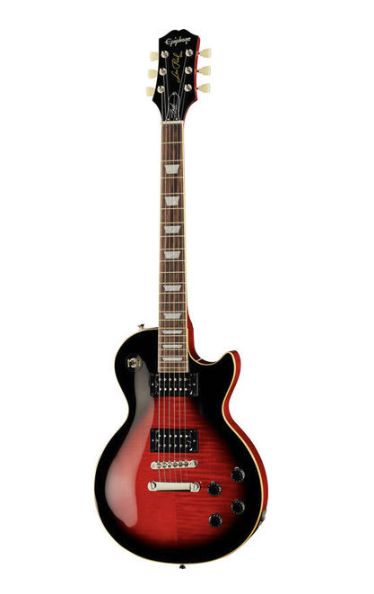

Guitarras
Descubre nuestras guitarras eléctricas de alta calidad. Ideal para todo tipo de músicos.
Descubre nuestras guitarras eléctricas de alta calidad. Ideal para todo tipo de músicos.

Perfectas para los que prefieren un sonido acústico auténtico. Excelentes para conciertos y práctica.
Las guitarras acústicas producen sonido a través de la resonancia de su caja de resonancia, mientras que las guitarras eléctricas requieren un amplificador para amplificar el sonido.
La elección de una guitarra depende de tus preferencias musicales, el estilo de música que tocas y tu nivel de experiencia. Es recomendable probar varias guitarras para encontrar la que mejor se adapte a ti.
El tipo de madera utilizada en la construcción de una guitarra tiene un impacto significativo en su sonido. Maderas como el abeto y la caoba son comunes para las tapas de las guitarras acústicas debido a su capacidad para producir un sonido rico y resonante. En las guitarras eléctricas, la madera del cuerpo y el mástil también afectan el tono, con opciones como el aliso y el fresno ofreciendo diferentes características tonales.
La elección entre una guitarra acústica y una eléctrica para principiantes puede depender de tus intereses musicales. Las guitarras acústicas son más simples en términos de configuración y mantenimiento, y son adecuadas para una amplia gama de estilos musicales. Las guitarras eléctricas, por otro lado, ofrecen una variedad de sonidos y efectos que pueden ser atractivos para quienes están interesados en el rock, metal, o música moderna. Ambos tipos tienen sus ventajas, así que la mejor opción depende de tus preferencias personales.
Los bajos acústicos producen sonido a través de la resonancia de su caja de resonancia, similar a una guitarra acústica, mientras que los bajos eléctricos requieren un amplificador para amplificar el sonido. Los bajos eléctricos suelen ofrecer un rango más amplio de sonidos y efectos.
La elección de un bajo depende de tu estilo musical, tus preferencias personales y el tipo de música que tocas. Los bajos de cuatro cuerdas son más comunes y adecuados para la mayoría de los géneros, pero también puedes considerar un bajo de cinco o seis cuerdas si necesitas un rango tonal más amplio. Probar varios modelos te ayudará a encontrar el que mejor se adapte a ti.
Para los bajos, los amplificadores con una buena respuesta en frecuencias bajas son cruciales. Busca amplificadores que ofrezcan una buena claridad en las frecuencias graves y medios. En cuanto a efectos, los pedales de overdrive, distorsión y compresión son populares entre los bajistas. Asegúrate de probar diferentes combinaciones para encontrar el sonido que mejor complemente tu estilo.
La elección de cuerdas para un bajo eléctrico puede depender de tu estilo de juego. Las cuerdas de acero inoxidable son duraderas y ofrecen un sonido brillante, mientras que las cuerdas de níquel tienden a ser más suaves y cálidas en el tono. También puedes optar por cuerdas de diferentes calibres para ajustar la tensión y el tono a tu preferencia.